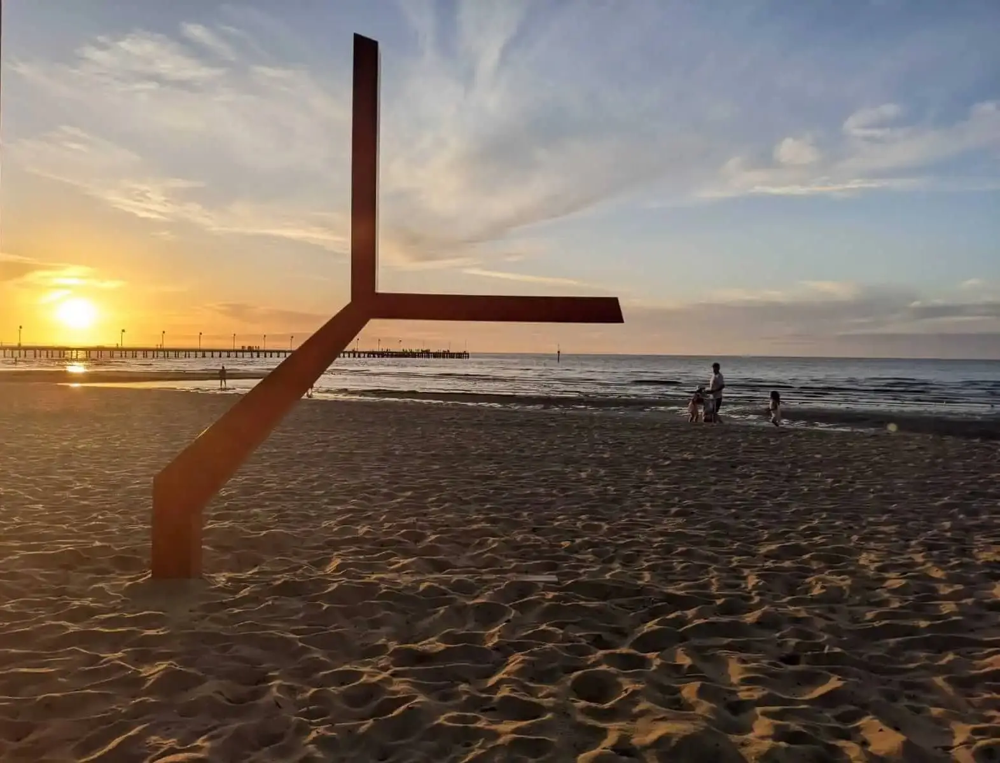

Frankston Beach
Frankston Beach is at the southern end of a stretch of beach that runs for nine kilometres almost due
north to the Patterson River mouth at Carrum. The Frankston section is 2.5 km long and begins at the
Olivers Hill Boat Ramp and continues north past the 220 m long Frankston Pier, Kananook Creek mouth and
a couple of kilometres towards the adjoining Seaford beach to the north. A delightful boardwalk meanders
along the foreshore.
The beach averages 50m in width, with a moderate to steep shoreline. Just off the shoreline are three
sand bars. The three bars are clearly visible from the pier, though waves will only break on the outer
two, when they are greater than 1 m. Frankston Beach is also the home of the lifesaving club, founded in
1924, and is adjacent to the city of Frankston with all facilities. Parking is available at the boat
ramp, pier and lifesaving club.
Content: https://www.visitmorningtonpeninsula.org/Places-To-See/Beaches-Coastline/View/5b35ce511d5df80b18375352/Frankston-Beach
Facilities
- BBQ facilities
- Boating facilities
- Café
- Car park
- Coach parking
- Picnic area
- Public toilet
Activities
- Canoeing
- Cycling
- Sailing
- Swimming
- Self guided